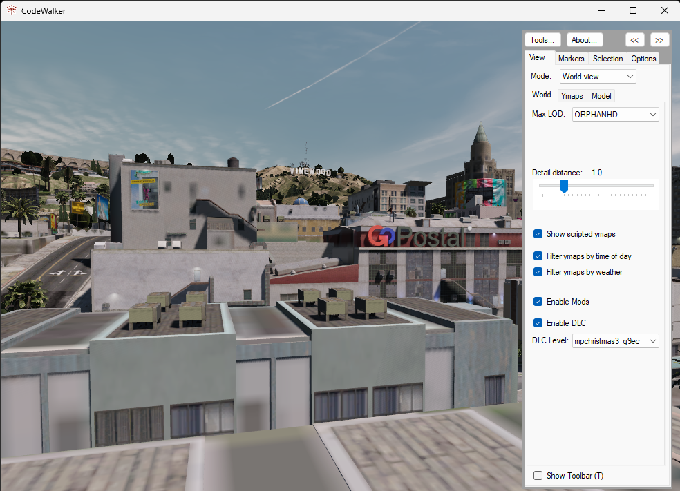

8 Glitch Art
//intro to error in photography (Clément Chéroux) and glitch art
Captures by Raphael Brunk
 Raphael Brunk, Capture75011.12_23 , 2016
Raphael Brunk, Capture75011.12_23 , 2016
 Raphael Brunk, Capture55326.4_19, 2016
Raphael Brunk, Capture55326.4_19, 2016
 *
* Tutorial
Controlling the Game Camera
We can detach the camera from the player’s character and move freely around the game world. We instantiate a new Camera variable called FreeCam. We define it as the new world camera with the same position and rotation of the gameplay camera:
FreeCam = World.CreateCamera(GameplayCamera.Position, GameplayCamera.Rotation, GameplayCamera.FieldOfView);We then define our new camera as the main camera with World.RenderingCamera = FreeCam. In order to control the camera we basically its vectors in 3D coordinates and multiply with a number over a certain direction to move towards a specific destination.
A free camera – unlike the main character view – also allows us to move through the game architecture and terrain, revealing the construction of the game world. Press O to toggle the free camera On and off.
Example code
//this code was kindly provided by LeeC22 on https://gtaforums.com/topic/981454-free-cam-mode-in-c/#comment-1072077418
using System;
using System.Windows.Forms;
using GTA;
using GTA.Math;
using Control = GTA.Control;
namespace BasicFreeCamTest
{
public class cBasicFreeCamTest : Script
{
private Keys ActivationKey = Keys.O;
private bool FreeCamActive = false;
private Camera FreeCam;
public cBasicFreeCamTest()
{
Tick += onTick;
KeyUp += onKeyUp;
Aborted += onAborted;
Interval = 0;
}
private void onTick(object sender, EventArgs e)
{
// Exits from the loop if the game is loading
if (Game.IsLoading) return;
if (FreeCamActive) UpdateFreeCam();
}
private void UpdateFreeCam()
{
float deltaTime = Game.LastFrameTime;
float speed = 5f;
float camSpeed = speed * deltaTime;
float rotSpeed = 40f;
float camRotSpeed = rotSpeed * deltaTime;
Game.DisableAllControlsThisFrame(2);
Vector3 camForward = FreeCam.Direction.Normalized; //FreeCam.ForwardVector
Vector3 camRight = Vector3.Cross(Vector3.WorldUp, camForward); //FreeCam.RightVector
Vector3 camUp = Vector3.Cross(camRight, camForward); //FreeCam.UpVector?
if (Game.IsDisabledControlJustPressed(2, Control.FrontendCancel))
{
World.RenderingCamera = null;
FreeCam.Destroy();
FreeCamActive = false;
return;
}
float fbSpeedMult = Game.GetDisabledControlNormal(2, Control.MoveUpDown);
float lrSpeedMult = Game.GetDisabledControlNormal(2, Control.MoveLeftRight);
float yawSpeedMult = Game.GetDisabledControlNormal(2, Control.LookLeftRight);
float pitchSpeedMult = Game.GetDisabledControlNormal(2, Control.LookUpDown);
float fbSpeed = camSpeed * fbSpeedMult;
float lrSpeed = camSpeed * lrSpeedMult;
float yawSpeed = camRotSpeed * yawSpeedMult;
float pitchSpeed = camRotSpeed * pitchSpeedMult;
Vector3 camLR = camRight * -lrSpeed;
Vector3 camFB = camForward * -fbSpeed;
Vector3 camMove = camLR + camFB;
Vector3 camRot = new Vector3(pitchSpeed, 0, -yawSpeed);
FreeCam.Position += camMove;
FreeCam.Rotation += camRot;
}
private void onKeyUp(object sender, KeyEventArgs e)
{
if (e.KeyCode == ActivationKey)
{
//toggle the freecam on/off
FreeCamActive = !FreeCamActive;
if (FreeCamActive) //ON
{
FreeCam = World.CreateCamera(GameplayCamera.Position, GameplayCamera.Rotation, GameplayCamera.FieldOfView);
World.RenderingCamera = FreeCam;
UI.ShowSubtitle("FreeCam ON", 1000);
}
else //OFF
{
World.RenderingCamera = null;
FreeCam.Destroy();
UI.ShowSubtitle("FreeCam OFF", 1000);
}
}
}
private void onAborted(object sender, EventArgs e)
{
World.RenderingCamera = null;
}
}
}

Recording and Replaying Camera Movements
We can record the movement of the camera by storing its posiiton and movement every frame in a list of Vector3 variables. Then we can simply access the list and assign the position of the camera at each frame. This is useful to create reusable camera movements, like tracking shots and cinematic camera movements. Once we have achieved the desired camera movement, we can spawn objects in the scene and adjust color grading before saving the screengrab.
In this example, turn on the free camera by pressing O and then start and stop the recording of the camera movement by pressing I. To toggle the replay camera press K.
Example code
//this code was extended by code for controlling the camera by LeeC22 on https://gtaforums.com/topic/981454-free-cam-mode-in-c/#comment-1072077418
using System;
using System.Collections.Generic;
using System.Linq;
using System.Text;
using System.Threading.Tasks;
using System.Windows.Forms;
using System.Drawing;
using GTA;
using GTA.Math;
using GTA.Native;
using Control = GTA.Control;
namespace BasicFreeCamTest
{
public class cBasicFreeCamTest : Script
{
private Keys ActivationKey = Keys.O;
private Keys RecordKey = Keys.I;
private Keys ReplayKey = Keys.K;
private bool FreeCamActive = false;
private bool RecCamActive = false;
private int CamFramesIndex = 0;
private bool ReplayCamActive = false;
private Camera FreeCam;
private Camera ReplayCam;
List<Vector3> RecCamPos = new List<Vector3>();
List<Vector3> RecCamRot = new List<Vector3>();
public cBasicFreeCamTest()
{
Tick += onTick;
KeyUp += onKeyUp;
Aborted += onAborted;
Interval = 0;
}
private void onTick(object sender, EventArgs e)
{
// Exits from the loop if the game is loading
if (Game.IsLoading) return;
if (FreeCamActive) UpdateFreeCam();
if (RecCamActive) UpdateRecCam();
if (ReplayCamActive) UpdateReplayCam();
}
private void UpdateRecCam()
{
RecCamPos.Add(FreeCam.Position);
RecCamRot.Add(FreeCam.Rotation);
UI.ShowSubtitle("Recording Camera ON", 100);
}
private void UpdateReplayCam()
{
Game.DisableAllControlsThisFrame(2);
ReplayCam.Position = RecCamPos[CamFramesIndex];
ReplayCam.Rotation = RecCamRot[CamFramesIndex];
CamFramesIndex++;
if (CamFramesIndex >= RecCamPos.Count)
{
CamFramesIndex = RecCamPos.Count - 1;
ReplayCamActive = false;
}
else
{
UI.ShowSubtitle("Playing Back Camera\nPlaying Back Frame #" + CamFramesIndex, 100);
}
}
private void UpdateFreeCam()
{
float deltaTime = Game.LastFrameTime;
float speed = 2f;
float camSpeed = speed * deltaTime;
float rotSpeed = 80f;
float camRotSpeed = rotSpeed * deltaTime;
Game.DisableAllControlsThisFrame(2);
Vector3 camForward = FreeCam.Direction.Normalized;
Vector3 camRight = Vector3.Cross(Vector3.WorldUp, camForward);
Vector3 camUp = Vector3.Cross(camRight, camForward);
if (Game.IsDisabledControlJustPressed(2, Control.FrontendCancel))
{
World.RenderingCamera = null;
FreeCam.Destroy();
FreeCamActive = false;
return;
}
float fbSpeedMult = Game.GetDisabledControlNormal(2, Control.MoveUpDown);
float lrSpeedMult = Game.GetDisabledControlNormal(2, Control.MoveLeftRight);
float yawSpeedMult = Game.GetDisabledControlNormal(2, Control.LookLeftRight);
float pitchSpeedMult = Game.GetDisabledControlNormal(2, Control.LookUpDown);
float fbSpeed = camSpeed * fbSpeedMult;
float lrSpeed = camSpeed * lrSpeedMult;
float yawSpeed = camRotSpeed * yawSpeedMult;
float pitchSpeed = camRotSpeed * pitchSpeedMult;
Vector3 camLR = camRight * -lrSpeed;
Vector3 camFB = camForward * -fbSpeed;
Vector3 camMove = camLR + camFB;
Vector3 camRot = new Vector3(pitchSpeed, 0, -yawSpeed);
FreeCam.Position += camMove;
FreeCam.Rotation += camRot;
}
private void onKeyUp(object sender, KeyEventArgs e)
{
if (e.KeyCode == ActivationKey)
{
//toggle the freecam on/off
FreeCamActive = !FreeCamActive;
if (FreeCamActive) //ON
{
FreeCam = World.CreateCamera(GameplayCamera.Position, GameplayCamera.Rotation, GameplayCamera.FieldOfView);
World.RenderingCamera = FreeCam;
UI.ShowSubtitle("Free Camera ON", 1000);
}
else //OFF
{
World.RenderingCamera = null;
FreeCam.Destroy();
UI.ShowSubtitle("Free Camera OFF", 1000);
}
}
if (e.KeyCode == RecordKey)
{
RecCamActive = !RecCamActive;
if(RecCamActive)
{
//Clear the array of positions and rotations
RecCamPos.Clear();
RecCamRot.Clear();
//reset index
CamFramesIndex= 0;
//disable replay cam
ReplayCamActive= false;
//activate free cam if it's off
if (!FreeCamActive)
{
FreeCam = World.CreateCamera(GameplayCamera.Position, GameplayCamera.Rotation, GameplayCamera.FieldOfView);
World.RenderingCamera = FreeCam;
FreeCamActive = true;
}
}
else
{
UI.ShowSubtitle("Recording Camera OFF\nRecorded Frames = " + RecCamPos.Count, 2000);
}
}
if (e.KeyCode == ReplayKey)
{
ReplayCamActive = !ReplayCamActive;
if(ReplayCamActive)
{
CamFramesIndex = 0;
ReplayCam = World.CreateCamera(RecCamPos[0], RecCamRot[0], GameplayCamera.FieldOfView);
RecCamActive = false;
FreeCamActive = false;
}
else
{
RecCamActive = false;
CamFramesIndex = 0;
}
}
}
private void onAborted(object sender, EventArgs e)
{
World.RenderingCamera = null;
}
}
}

Attaching a Camera to an Entity
We can also attach a camera to a car, a prop or an NPC. The Camera object in GTA has AttachTo function we can call, followed by two paramenters: the entity we want to attach the camera to and the position relative to the entity.
Attaching a camera to an NPC can provide interesting views and perspectives. Here we create a cat NPC by pressing G and attach a camera to it. We can switch the camera view by pressing SHIFT + K and let the cat follow the player by pressing H.
Example code
using System;
using System.Collections.Generic;
using System.Linq;
using System.Text;
using System.Threading.Tasks;
using GTA;
using GTA.Math;
using System.Windows.Forms;
using System.Drawing;
using GTA.Native;
using System.IO;
namespace moddingTutorial
{
public class moddingTutorial : Script
{
Vector3 myCamPos;
int CamSelect = 0;
Ped newPed = null;
Camera myCam;
public moddingTutorial()
{
this.Tick += onTick;
this.KeyUp += onKeyUp;
this.KeyDown += onKeyDown;
}
private void onTick(object sender, EventArgs e) //this function gets executed continuously
{
//exits from the loop if the game is loading
if (Game.IsLoading) return;
//update the cameras if the ped is spawn
if (newPed != null)
{
//create the cameras if none have been created yet.
if (myCam == null)
{
UI.ShowSubtitle("Set new camera");
myCam = World.CreateCamera(Vector3.Zero, newPed.Rotation, 50f);
// Set the camera position (relative pos)
myCamPos = new Vector3(0, 0, 1f);
}
//attach the cameras
myCam.AttachTo(newPed, myCamPos);
//sync rotation
myCam.Rotation = newPed.Rotation;
}
}
private void onKeyUp(object sender, KeyEventArgs e)//everything inside here is executed only when we release a key
{
//press control+K to switch between gameplay default camera and the NPC camera
if (e.KeyCode == Keys.K && e.Modifiers == Keys.Shift && newPed != null)
{
CamSelect = (CamSelect + 1) % 2;
switch (CamSelect)
{
case 0: World.RenderingCamera = null;
UI.ShowSubtitle("Showing Gameplay Cam View");
break;
case 1: World.RenderingCamera = myCam;
UI.ShowSubtitle("Showing NPC Cam View");
break;
}
}
}
private void onKeyDown(object sender, KeyEventArgs e) //everything inside here is executed only when we press a key
{
if(e.KeyCode == Keys.G)
{
//spawn new Ped
newPed = World.CreatePed(PedHash.Cat, Game.Player.Character.GetOffsetInWorldCoords(new Vector3(1, 3, 0)));
}
if (e.KeyCode == Keys.H)
{
//follow player (persistent)
Function.Call(Hash.TASK_FOLLOW_TO_OFFSET_OF_ENTITY, newPed.Handle, Game.Player.Character.Handle, 0f, 1f, 0f, 2.0f, -1, 5f, true);
//look at player
newPed.Task.LookAt(Game.Player.Character);
}
if (e.KeyCode == Keys.J)
{
//stop NPC
newPed.Task.ClearAll();
}
if (e.KeyCode == Keys.L)
{
//delete ped
newPed.Delete();
}
}
}
}Creating and Switching between Multiple Cameras
The easiest way to create multiple cameras is position invisible Ped NPCs in specific locations, make them invisible with the native function SET_ENTITY_VISIBLE and attach a camera to them. We can switch between the different cameras with SHIFT + K. These can be used as different cameras to surveil and look at scenes in different locations within the game world.
Example code
using System;
using System.Collections.Generic;
using System.Linq;
using System.Text;
using System.Threading.Tasks;
using GTA;
using GTA.Math;
using System.Windows.Forms;
using System.Drawing;
using GTA.Native;
namespace ModdingTutorial
{
public class ModdingTutorial : Script
{
Vector3 myCamPos;
int CamSelect = 0;
int CamCount = 3;
List<Ped> myPeds = new List<Ped>();
Model myModel = PedHash.Abigail;
List<Vector3> myLocs = new List<Vector3>();
Camera newCam= null;
List<Camera> myCam = new List<Camera>();
public ModdingTutorial()
{
this.Tick += onTick;
this.KeyUp += onKeyUp;
this.KeyDown += onKeyDown;
myLocs.Add(new Vector3(450.178f, 5566.614f, 806.183f)); //Mt.Chiliad
myLocs.Add(new Vector3(24.775f, 7644.102f, 18.055f)); //Most Northern Point
myLocs.Add(new Vector3(150.126f, -754.591f, 261.865f)); //FIB Roof
for (int i = 0; i < CamCount; i++)
{
//create Ped
var newPed = World.CreatePed(myModel, myLocs[i]);
Function.Call(Hash.SET_ENTITY_VISIBLE, newPed, false, 0);
myPeds.Add(newPed);
//create Cam
newCam = World.CreateCamera(Vector3.Zero, myPeds[i].Rotation, 50f);
myCam.Add(newCam);
myCamPos = new Vector3(0, 0, 1f);
}
}
private void onTick(object sender, EventArgs e)
{
//update Cams
for (int i = 0; i < CamCount; i++)
{
myCam[i].AttachTo(myPeds[i], myCamPos);
myCam[i].Rotation = myPeds[i].Rotation;
}
}
private void onKeyUp(object sender, KeyEventArgs e)
{
//switch between cameras when pressing SHIFT + K
if(e.KeyCode == Keys.K && e.Modifiers == Keys.Shift && myPeds[2] != null)
{
CamSelect = (CamSelect + 1) % 4;
switch(CamSelect)
{
case 0: World.RenderingCamera = null;
UI.ShowSubtitle("Showing Gameplay Cam View");
break;
case 1: World.RenderingCamera = myCam[0];
UI.ShowSubtitle("Showing Cam 1");
break;
case 2: World.RenderingCamera = myCam[1];
UI.ShowSubtitle("Showing Cam 2");
break;
case 3: World.RenderingCamera = myCam[2];
UI.ShowSubtitle("Showing Cam 3");
break;
}
}
}
private void onKeyDown(object sender, KeyEventArgs e)
{
}
}
}

Switching Character through Satellite Camera View
We can use the native function START_PLAYER_SWITCH to enable the satellite view animation from the game, and get transported to a different location where an NPC or player avatar is spawned. Press G to move across divverent NPCs at different location through the satellite camera transition.
Example code
/*
this was adapted from code shared by LeeC22 on gtaforums.com
https://gtaforums.com/topic/951002-c-looking-for-player-switch-sample-solved-by-me/#comment-1071197769
*/
using System;
using System.Collections.Generic;
using System.Linq;
using System.Text;
using System.Threading.Tasks;
using GTA;
using GTA.Math;
using System.Windows.Forms;
using System.Drawing;
using GTA.Native;
using System.IO;
namespace moddingTutorial
{
public class moddingTutorial : Script
{
Ped newPed = null;
Vector3 SwitchLocation2;
List<Vector3> switchLocations = new List<Vector3>();
int index = 0;
List<String> models = new List<String>();
int modelIndex = 0;
public moddingTutorial()
{
this.Tick += onTick;
this.KeyUp += onKeyUp;
this.KeyDown += onKeyDown;
//add locations to the switchLocations list
switchLocations.Add(new Vector3(24.775f, 7644.102f, 18.055f)); //Most Northerly Point
switchLocations.Add(new Vector3(-595.342f, 2086.008f, 130.412f)); //Mine
switchLocations.Add(new Vector3(150.126f, -754.591f, 261.865f)); //FIB Roof
//add models to the models list
models.Add("s_m_m_doctor_01");
models.Add("s_m_m_migrant_01");
models.Add("a_c_cormorant");
models.Add("a_c_deer");
models.Add("a_c_pug");
}
private void onTick(object sender, EventArgs e) //this function gets executed continuously
{
//If the character switch is in process
if (Function.Call<bool>(Hash.IS_PLAYER_SWITCH_IN_PROGRESS))
{
//If Switch State is 8 – that's the point when it starts dropping to the player
if (Function.Call<int>(Hash.GET_PLAYER_SWITCH_STATE) == 8)
{
//Set the player to the switch location
Game.Player.Character.Position = switchLocations[index];
//Generate the hash for the chosen model
int poshHash = Game.GenerateHash(models[modelIndex]);
//Create the model
Model poshModel = new Model(poshHash);
//Check if it is valid
if (poshModel.IsValid)
{
//Wait for it to load, should be okay because it was used to create the target ped
while (!poshModel.IsLoaded)
{
Wait(100);
}
//Change the player model to the target ped model
Function.Call(Hash.SET_PLAYER_MODEL, Game.Player, poshHash);
//Let the game clean up the created Model
poshModel.MarkAsNoLongerNeeded();
}
else
{
//Falls to here if the model valid check fails
Function.Call(Hash.SET_PLAYER_MODEL, Game.Player, (int)PedHash.Tourist01AFY);
}
//Delete the target ped as it's no longer needed
newPed.Delete();
// Set the switch outro based on the gameplay camera position
// Function.Call((Hash)0xC208B673CE446B61, camPos.X, camPos.Y, camPos.Z, camRot.X, camRot.Y, camRot.Z, camFOV, camFarClip, p8);
Function.Call((Hash)0xC208B673CE446B61, GameplayCamera.Position.X, GameplayCamera.Position.Y, GameplayCamera.Position.Z, GameplayCamera.Rotation.X, GameplayCamera.Rotation.Y, GameplayCamera.Rotation.Z, GameplayCamera.FieldOfView, 500, 2);
//Call this unknown native that seems to finish things off
Function.Call(Hash._0x74DE2E8739086740);
//Make the character wander around autonomously
Game.Player.Character.Task.WanderAround();
}
}
}
private void onKeyUp(object sender, KeyEventArgs e)
{
}
private void onKeyDown(object sender, KeyEventArgs e)
{
if (e.KeyCode == Keys.G)
{
//Stop previous tasks
Game.Player.Character.Task.ClearAll();
//Move the index to the next location
index++;
if (index >= switchLocations.Count) index = 0;
//Move the index to the new ped model
modelIndex++;
if (modelIndex >= models.Count) modelIndex = 0;
//Create the ped to switch to
newPed = World.CreatePed(models[modelIndex], switchLocations[index]);
//Native function to initiate the switch Function.Call(Hash.START_PLAYER_SWITCH, fromPed.Handle, toPed.Handle, flags, switchType);
Function.Call(Hash.START_PLAYER_SWITCH, Game.Player.Character.Handle, newPed.Handle, 8, 0);
}
}
}
}
Menyoo Mod Trainer
Game trainers are a kind of game modification that changes its behavior using addresses and values. Trainers are used to gain unfair advantage in games and cheating, but they are also used by players to “train” themselves under different game conditions. In GTA V a trainer mod is very useful for creative practices, as it allows players to modify many aspects of the game that extend the possibilities offered by the official Scene Director and Rockstar Editor. They do not require scripting and offer control of the game world through a more intuitive graphic interface.
Menyoo is one of many available mod trainers for GTA V. It’s the most popular trainer because of its incredibly wide range of features, controlling NPCs, vehicles, props and scenes, and allowing players to generate custom interiors and objects from GTA V’s database of entities, dynamic scenarios, and entire sets and scenes for machinima and photographic projects.
Installation and setup
Menyoo requires Scripthook V and Scripthook V Dot Net which we already installed in order to enable our scripts (check chapter 5 if for some reasons you do not have them installed).
In order to install the Menyoo Single Player Trainer go to github.com/MAFINS/MenyooSP/releases and download the
MenyooSP.zipfile in the Assets section of the page. Open its content and select themenyooStuff``folder andMenyoo.asi```file. Copy and paste these in your GTA V directory.Run GTA V and press
F8to bring up the Menyoo Trainer menu. From there you can control many of the functions we are learning to script, including character models, animations, and teleporting.
//https://forums.gta5-mods.com/topic/64/menyoo-object-spooner-tutorial

Scripting will always give you more accurate control of what you can achieve, but a trainer mod is very useful in showing what’s possible and it’s a much more accessible tool for those who are less incline to code. Finally, all of the tools in this guide are not mutually exclusive, but can be combined together: menyoo can be used with custom scripts, ReShade, screenshotting, Scene Director and Rockstar Editor, allowing the player to really have complete control of the game and its world. In the example below we have used code to spawn 5 clown NPCs and to position the game camera, the weather manipulated in Menyoo to create a meteor shower, and we used a shallow depth of field lens and color grading in ReShade.

CodeWalker
CodeWalker is an applicaiton created by dexyfex that renders an interactive 3D Map for GTAV. Through CodeWalker we are able to modify the architecture and objects inside the map, replacing textures and images with custom content.
Installation and setup
Go to https://www.gta5-mods.com/tools/codewalker-gtav-interactive-3d-map and download CodeWalker. Extract the content of the .zip folder and open the CodeWalker application. Once the GTAV installation folder has been found, the world view will load by default. Use the WASD keys to move, and left-drag to rotate the camera view. Mouse wheel zooms in/out and controls the movement speed.
Click on the arrow on the top left of the screen, then select
Enable ModsandEnable DLC.

- On top of the panel click on
Options > Lighting. DeselectDeferred shadingand inTime of Dayset the time to 12:00. Then click onSave Settings.
Creating Custom Maps
- Next we are going to hit the
Tkey and select theSelect objectstool from the tool bar.
- Click on the
Movetool, which allows to select things by right clicking on them. Hovering on the object will highlight the bounding box of the model, right clicking it will enable the movement of the object. Try dragging an object in 3D space, clicking and dragging one of the 3D axis arrows.
Undo the changes by pressing
Undofrom the tool bar orCtrl + Zuntil the object is back in its original position.Now press the first tool on the left in the tool bar:
New. This will open the Project window.Select an object with the
Select objectstool and you will see that the object information is updated in the Project window, including the object’s position, rotation and file name (archetype). Choose an object and clickAdd to Project. This will add the object to our ymap.
Note: do not delete assets from the game map. Simply select an object that can be added to the project.
- With the
Select objectstool andMovetool selected, holdSHIFTand drag the object to multiply the object. In this example we have multiplied a chair a few times, moved them and rotated them.
Once you are happy with your changes, go to
File > New > Ymap Filein the Project window. This creates a new ymap calledmap1.ymap.We can also add objects that are not in the immediate vicinity of the location we want to add them to. Select map1.ymap in the Project window, and from the window menu press
Ymap > New Entity. This will create a default egg. In the Project window go to Archetype and replace the file name with the one of the object you want. You can refer to this database to find the file name reference of each object easily (or use theSelect objectstools and copy the Archetype info from your desired object).Once you are done click on the
Saveicon and save your file in a folder titled YMAP.In the Project window now go to
Toolsand click onManifest Generator.... Click onSave _manifest.ymland save them as _manifest1.yml //memo: actually this is only needed for custom YMap on FiveM, so we could skip it hereGo to Open IV > mods > update > x64 > dlcpacks, click Edit Mode and create a folder named custom_maps. Inside the folder copy the file dlc.rpf that you can find here.
Now go to Open IV > mods > update > update.rpf > common > data. Find dlclist.xml, richt click on it and choose edit. Scroll to the end of the file and add
<Item>dlcpacks:/custom_maps/</Item> above </Paths>and save.Finally go to Open IV > mods > update > x64 > dlcpacks > custom_maps > dlc.rpf > x64 > levels > gta5 > _citye > maps > Custom_maps.rpf. Make sure Edit Mode is on and place your .ymap file here.
Now open GTA V and go to the location where you made the changes and see if they are there.

- Depending on the kind of objects you have place, and the flags you set, you will be able to interact with them, and the game will also recognize them and span some NPCs on them.

Editing and replacing textures
//Required: Photoshop and NVIDIA DDS Plugin https://developer.nvidia.com/nvidia-texture-tools-exporter
//files: .yft are 3D models, .ydr are ?? and .ytd are textures
- Open Code Walker and find a texture you want to replace. Use the
Select objectsto move objects around until you find where the texture you want to change is. We are going to replace a billboard banner with a custom image. In this specific case we can see that the billboard structure is not part of the image, and that the banner is actually part of the ground.

- In the Code Walks menu on the right go to
Selectionand check the filename of the object that contains our image. In our case that is “sp1_04_ground”
- Open Open IV and copy “sp1_04_ground” into Open IV’s search bar on the top of the window. Then click on
Search in allunder the “No items match your search” text. Select and double click on “sp1_04_ground.ydr” and click onCopy to "mods" folder.

- Double click on “sp1_04_ground.ydr” to bring up OpenIV Model Viewer and inspect the 3D model. Click on
[+] Add texturefrom the menu on the bottom right and select the different .ytd texture folders. If you select “spi_04.ytd” or “spi_04+hi.ytd” you’ll load the texture of the billboard banner appear. The two files are the ones that are loaded by the game when the camera is closer and further from the object respectively.

- Close the Model Viewer and back in Open IV look for the “spi_04.ytd” texture file. Double click on it to bring up Open IV Texture Editor. Inside the .ydt file you will see all the .dds files contained in it. We have 2 files in “spi_04.ytd”. We can preview them by selecting them and we can find the banner image in “sp1_04_rss_hc_bbrd_01”. We select that, click
Export selectedand save the file somewhere on our computer.
- We open the file we saved in Photoshop. Modify the image as you want and then flatten all layers (ctrl+E) in Photoshop. Then choose
Save as a copyand select .DDS type file and replace the file. The NVIDIA DDS Plugin interface will pop up. Here it’s important to set the file type tp the same kind as the original .dds file. In this example the file is a DXT1 type, which is equivalent to the “BC1a 4bpp with 1 bit alpha” option. Select that and hitSave
- Close Photoshop and back in Open IV go back to “spi_04.ytd” and bring up Open IV Texture Editor. Select “sp1_04_rss_hc_bbrd_01” again and now click
Replace. Select the modified file form your computer and clickSave.
Do the same for “spi_04+hi.ytd”. Try to make the image as similar as possible so that when the game switches between the files (according to the player distance) the change is seamless.
When all the textures are modified with our custom image, relaunch Code Walker and verify that the image has changed.
- Finally launch GTA 5 and you should be able to find your texture appearing inside the game.

This tutorial was adapted from [GTA 5 Tutorial - Part 2] Using codewalker and creating/modifying ymaps by Tobii, and https://www.youtube.com/watch?v=70ODCkbrj60&ab_channel=TeachingHub, [GTA 5 Tutorial - Part 5] Texture editing, replacing and changing by [Tobii§] (https://www.youtube.com/watch?v=931L_2ZvOl4&list=PL3KgAhmoIEOU540c5hydM5KaVXeJcYiPF&index=7&ab_channel=Tobii)
//https://www.gta5-mods.com/tools/codewalker-gtav-interactive-3d-map //https://www.youtube.com/watch?v=VDoAjV3kv2g&list=PL3KgAhmoIEOU540c5hydM5KaVXeJcYiPF&ab_channel=Tobii
//delete objects (note: if Max LOD > LOD shows the object, you should not delete it, just move it but dont delete it)
//generate and save manifestNAME.ymf // copy ymf and ymap files to server
//replace textures with custom images